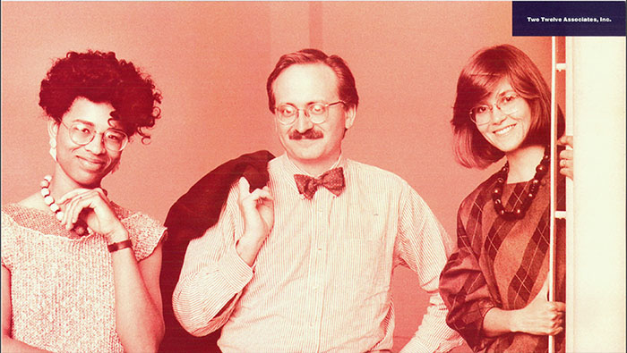

Background
Sylvia Harris grew up in Richmond, Virginia during the 1960s. This was a time when desegregation led the headlines in the newspapers. As a first-hand experience of the process, it gave Harris a unique understanding of people and social systems. In 1975 she attained her Bachelors of Fine Arts in communication art and design from Virginia Commonwealth University. There is where she met AIGA Medalist Philip Meggs who gave her the first taste of the Kool-Aid we call design. After college, she moved to Boston, and that is where she would find her fire for design. In Boston, Sylvia landed a job at WGBH and worked directly with Chris Pullman. Chris became much more than a boss. He grew to become Sylvia's mentor and friends. Chris recognized her potential and in helping her explore the possibilities, he ended up leaving an impressionable mark on her career.
"He showed interest in my career, in me, and he gave me advice."
During late 1970 there weren't many persons of color doing the work that Chris was doing. So Harris had slim pickings when it came to impressionable mentors. Lucky for her there was Chris. In leaving his mark, Chris would soon help Sylvia find her path to Yale for graduate school. Before the trip to Yale Harris scored another job at The Architects Collaborative where she was introduced to environmental graphic for the first time. This job was a life changer because it set the tone for her later achievements.
After Yale
Sylvia finally left The Architects Collaborative because she believed she didn't know enough about design. From the advice, she received from Chris; Harris went to Yale where she earned a Master of Fine Arts in Graphic Design. In 1980 she along with Juanita Dugdale and David Gipson cofounded Two Twelve Associates a design consulting firm in New York City. Just like any successful company projects grow and in that growth Harris also grew. David explained:
"She relentlessly explored how to use all of the tools in a designer's toolkit to create comprehensive public information systems."
This fire leads to her ground breaking work for Citibank, and it set the standard for human-centered automated customer service. In 1994 she started Sylvia Harris LLC after leaving Two Twelve. As her passion grew, she found her self-helping to solve problems for the nation's largest hospitals, universities, and civic agencies through systems planning, policy development, and innovation management. Sylvia is the brains behind the design of the United States Census Bureau, Census 2000 and that's where her experience from the 1960s help her to encourage under-represented citizens to participate.
At AIGA
On April 25, 2014, at the AIGA Centennial Gala, Harris was awarded the AIGA Medal. The medal is AIGA's most distinguished award, and it's the highest honor a designer can achieve from the organization.
***
This is the story of Sylvia Harris. A beautiful soul who loves a mark for many to follow for generations to come. May her story live on through the books and the hearts of the people she touched.
Resources
The following websites were used to as resources to help write this story.
AIGA Design Journeys
Glenford Laughton
Design Observer
Print Magazine
Citizen Research & Design
Two Twelve
Share on